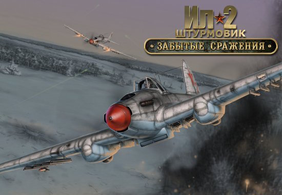
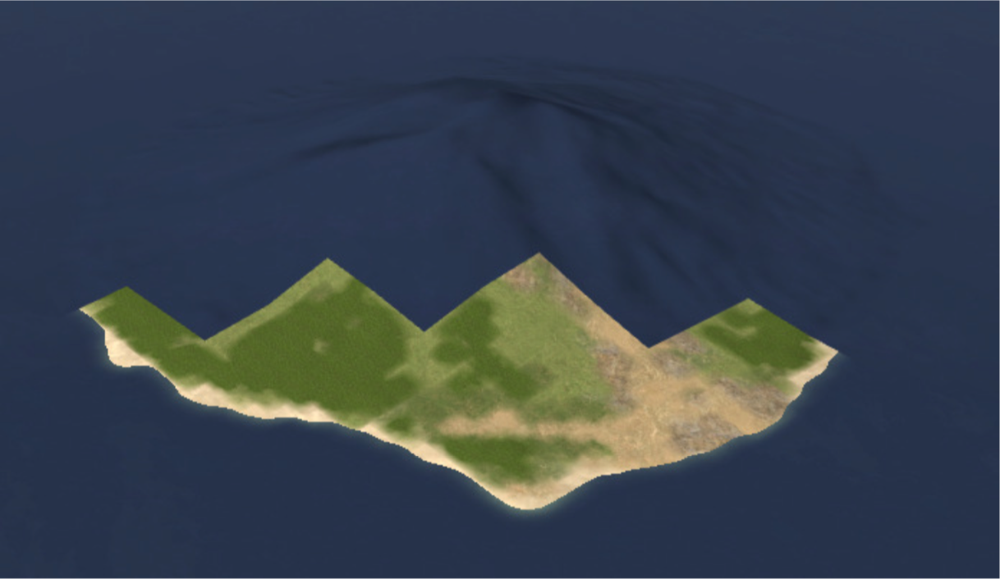

GIS AeroUA 2016
Картография в авиасимуляторе
«Ил-2 Штурмовик»
Докладывает Обловатный Александр
oblalex.github.io/GIS-AeroUA-2016
О чем доклад?
— Коротко о себе.
— Об авиасимуляторе, текущий статус и развитие.
— Личный интерес.
— Развитие сегодня.
— Территории, представленные в симуляторе.
— Процесс разработки карт.
— Практическое применение навигационных карт.
— Личный вклад.
— Ожидания и планы на будущее.
О себе
— Инженер.
— Черниговский политех (спец. комп. сис-мы и сети).
— Магистратура (янв. 2014).
— В отрасли ИТ с января 2013.
— Сейчас разработчик ПО в SoftServe (аутсорс).
— Занимаюсь web, backend, API, networking.
— Интересуюсь почти всем.
— Люблю пространство и созидание.
Об авиасимуляторе
Об авиасимуляторе
— Дата выпуска: 18 ноября 2001.
— Разработчики: «Maddox Games».
— Издательства: «Ubisoft», «1С».
— Последняя платная версия: 4.07 (22 декабря 2006 г.).
— Преемники: команда энтузиастов «Daidalos Team».
— Крайняя версия: 4.13.1 (7 апреля 2016 г.).
— Спектр неофициальных модификаций.
— 90.65% (GameRankings), 91/100 (metacritic).
Это игра или как?
— Игра.
— Пилотажный симулятор.
— Спортивный симулятор.
— Исторический симулятор.
— Интерактивный симулятор 2-й МВ.
— Командный тренажер.
— Реалистичный многоцелевой авиасимулятор.
“На момент выхода это была самая высокотехнологичная игра в своём жанре и оставалась таковой длительное время.”
Личный интерес
— Обработка и анализ событий.
— Сетевое программирование.
— Асинхронное программирование.
— Многопототочность, многопроцессорность.
— Релиз-менеджмент.
— Веб.
— UI.
— Реверс-инжиниринг.
— Картография.
— GIS.
— Статистика.
— Распознавание образов.
— ИИ, машинное обучение.
— Экономика.
Развитие сегодня
— Команда энтузиастов «Daidalos Team».
— Новые патчи ~1 раз в год.
— Локальная группа разработчиков и тестировщиков.
— Сообщество.
— Модификации.
— Старые технологии, примитивный процесс.
— Нашел проблему? Почини сам и докажи!
Территории в симуляторе
— 79 официальных локаций (вкл. вариации).
— мин. 125 неофициальных локаций (вкл. вариации).
— Средние площади: в пределах 100 тыс. км2.
— Наибольшая площадь: 496 тыс. км2 (станд.).
— Наибольшая площадь: 708 тыс. км2 (модиф.).
— Теоретический максимум стороны: 3276.8 км (215/10).
— Теоретический максимум площади: 10737 тыс. км2.
Площади локаций
Европа и Африка
Европа и Африка
Дальний Восток
Тихий океан
Территория Украины
Киев в игре
Киев в реальности

Разработка: необходимые данные
— Загрузчик локации.
— Мировой океан и суша.
— Рельеф.
— Текстуры.
— Статический LOD (для старых или слабых ПК).
— Навигационная карта.
— Статические объекты.
— Названия и тексты.
Загрузчик локации
— Список навигационных карт.
— Текстуры и материалы.
— Тексты.
— Статические объекты.
— Камуфляж.
— Месяц года.
— Температура воздуха.
— Атмосферное давление.
Исходные данные
— SRTM 90m (Shuttle Radar Topography Mission) — осн. ист.
— ASTER GDEM (Advanced Spaceborne Thermal Emission and Reflection Radiometer).
— Местные топографические карты.
— DCW (Digital Chart of the World).
— GADM (Global Administrative Areas).
STRM
viewfinderpanoramas.org
DIVA-GIS free data
Пример: создание о-ва Манам
Инструментарий
— Текстовый редактор.
— Графический редактор (GIMP / Photoshop).
— Microdem.
— Взломанный «Ил-2 Штурмовик» с утилитами.
Получение данных о рельефе
Загрузка в Microdem
Выбор участка
Подготовка данных о ландшафте
Определение береговой линии
Определение береговой линии

Черный — море, белый — суша.
Сжатие информации о береговой линии
Ширина фикфированная: 1024 точки.
Блоки данных: 32х32 точки.
Создание карты рельефа
Макс. высота: 4032 м.
256 оттенков серого
1 точка — 200 метров
Корректировка береговой линии
Эффективность 95%.
Необходима "доработка напильником".
Корректировка береговой линии
Карта текстур
— Индексирование через оттенки серого.
— Включает в себя дороги (+ ж/д), реки, леса, города.
— Всего 256 возможных текстур.
— Использовать можно 29: остальное для рельс и дорог.
Пример карты текстур
0 — земля, 31 — морская вода.
Весь покрытый зеленью
В действительности всё не так...
Примеры текстур земли
Примеры текстур воды
После ручной корректировки

Статический LOD (необязательно)
Сингуляризация текстуры

Раскраска карты текстур

Создание аэродромов
Выравнивание поверхности

Добавление текстов
Добавление статических объектов
Это ещё не конец
— Реки и сезонные ручьи, водохранилища и озера.
— Дороги, шоссе, рельсы, их пересечения.
— Мосты.
— Населённые пункты.
— Учёт карт, фотоснимков тех времён, архивы.
Создание навигационной карты
Пример реальной навигац. карты
Пример реальной карты линий берегов
Пример реальной карты высот
Пример реальной карты текстур
Использование навигационных карт
Использование навигационных карт
Использование карт высот
Личный вклад
— Парсер журнала событий.
— Парсер миссий.
— Библиотека для работы с выделенным сервером.
— Исследование опроса координат объектов в реальном времени.
— Миникоммандер.
— Инструмент получения реальных высот.
— Картографический веб-сервис.
— Вспомагательные утилиты.
— Поиск и исследование неисправностей.
Карта проектов
Картографический сервис
Улучшенная версия
Видимый слой карты высот
Слой идеальных равнин

Ещё лучше
Ожидания и планы на будущее
— Создание современного коммандера.
— Создание генератора миссий.
— Создание картографического сервиса.
— Создание картографической библиотеки.
— Улучшение процесса разработки.
— Исправление ошибок.
— Развитие функционала.
— Один в поле — не воин.
— Политический аспект.
— Профессиональный аспект.
Вопросы
Конец
Спасибо за внимание!